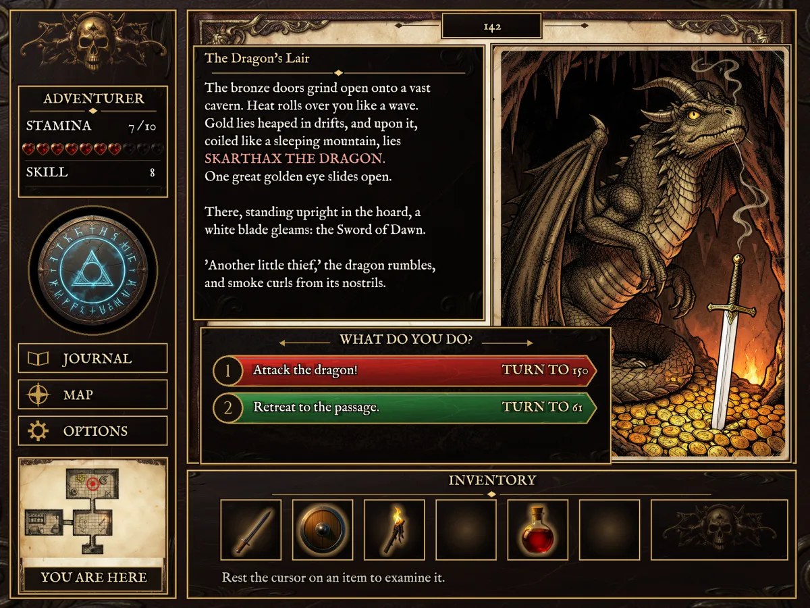
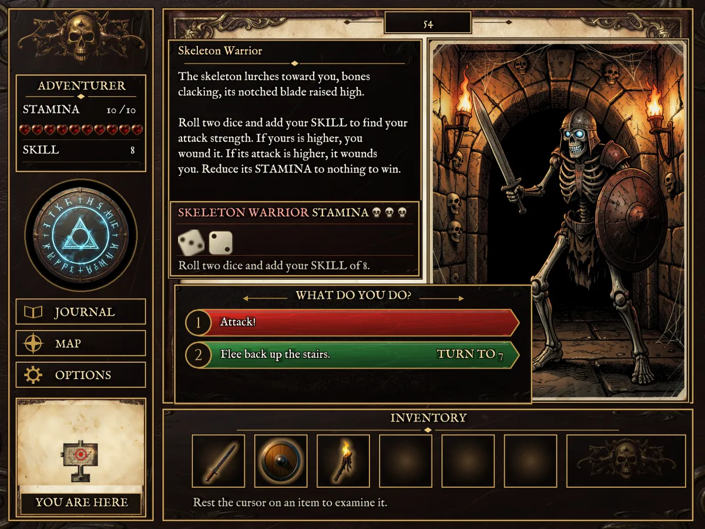
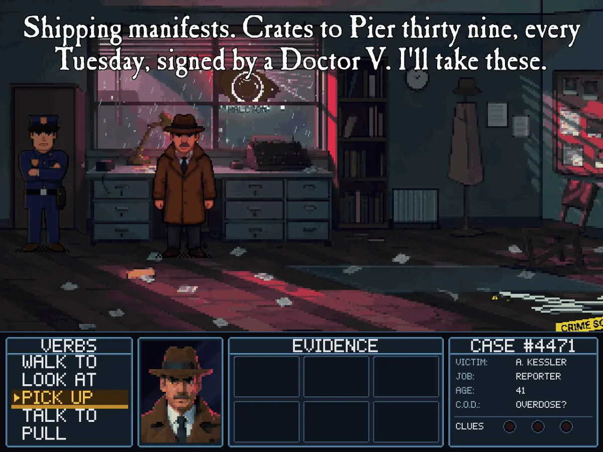
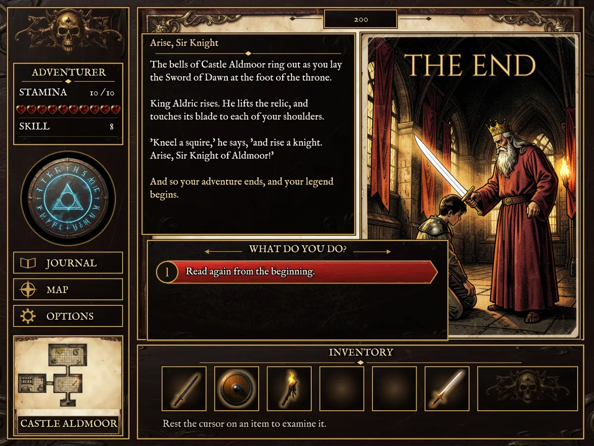

// The King's Relic, section 142: the dragon's lair.
func show142
call lairScene
call dragonIdleLoop
select glint
play glintAnim 99999 2s
book::music = 3
ui::visible p142 true z=7
func to142
call turnPage
call show142
call fadeIn
sound sfx_roar 0.5
call revealText
call showChoices
ui p142 modal=false
if book::reveal >= 6 pos=485,415
text p142e tint=1,0.38,0.3,1
if book::reveal >= 99
image choices_box pos=470,770
text c142a pos=600,915 click=go150
// One round against the skeleton: roll, then animate.
func skeletonRound
combat::result = 0
wait random
call hitA
call hitB
call missA
end
switch combat::foeHp
call skeletonDies
call skelIdleLoop
end
mouse::active true
func strikeSkeleton
sound sfx_sword 0.7
select spr1
stopall
wait play skelHitAnim 1 0.45s
anim skelFallAnim
duration 1
image 0 0 0 skel_fall_0
duration 2
image 0 0 0 skel_fall_2
// Malone: Case #4471. Pick up the papers on the desk.
func Pick_Papers
call goPapers
select detective
sound sfx_paper 0.7
wait play det_take_papers 1 1.2s
sound sfx_pickup 0.6
call faceS
wait talk PickPapers
call gotPapers
// talk plays the line and builds the lip-sync from the WAV.
voice PickPapers
en v_PickPapers "Shipping manifests. Crates to Pier thirty nine, every Tuesday, signed by a Doctor V. I'll take these."
before
select detective
func scaleDetective
$scale = 1 + ((1.15 - 1) * $2), scale $scale
# The whole book, played by the game itself.
names
wait idle timeout=30s
click ui "Open the book"
wait var book::reveal == 99
click ui "Accept the quest."
wait var map::gate == 1
click ui "Fight the skeleton."
click ui "Attack!"
wait var quest::skeleton == 1
click ui "Unlock the chest with the key."
wait var hero::potion == 1
click ui "Attack the dragon!"
wait var hero::hp == 1 timeout=60s
click ui "Drink the healing potion."
click ui "Strike at the dragon's heart!"
wait var quest::dragon == 1
click ui "Return to King Aldric."
wait var quest::knight == 1
screenshot target/the-end.png
exit
king-relicnative · Metal



